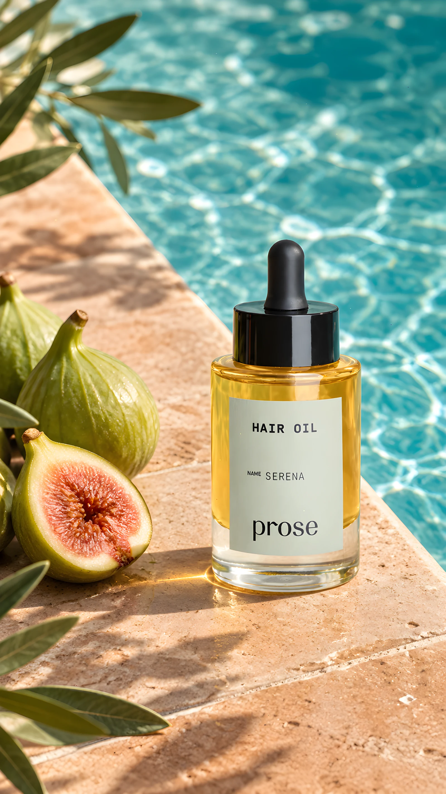

场景与材质
用自然光、场景与产品位置组织画面，探索产品材质的质感与氛围。
AI VISUAL / 创意练习
以产品场景、时尚内容和短视频为载体，探索生成式 AI 的视觉表达。关注材质、光线、镜头与主体一致性，把图像生成和后期制作结合起来。

CREATIVE FOCUS
用自然光、场景与产品位置组织画面，探索产品材质的质感与氛围。
把产品展示、人物场景与转场组合成短视频，关注画面之间的衔接。
检查产品标识、服装细节和主体连续性，结合后期调整呈现效果。
MOTION STUDIES
AI 生成与后期制作的视觉练习；既有品牌和产品标识属于原权利人。
VISUAL STUDIES
REFLECTION
AI 生成可以快速探索视觉方向，但完整作品仍需要明确主体、检查细节，并处理镜头之间的衔接。产品标识、物体形态与服装连续性，是我在制作和复盘时关注的重点。
这些作品展示的是生成式内容制作与后期表达能力。画面中的既有品牌、产品与角色标识不属于我的原创设计。